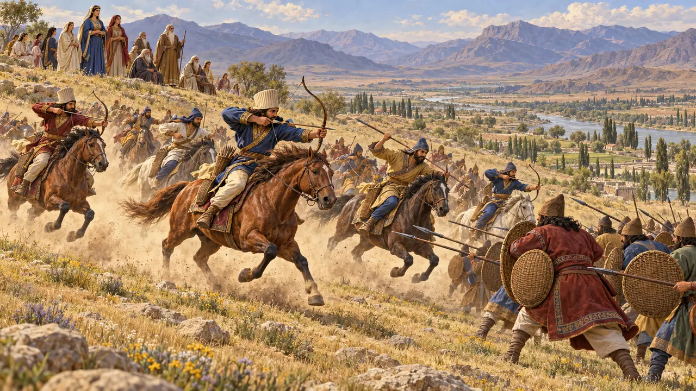
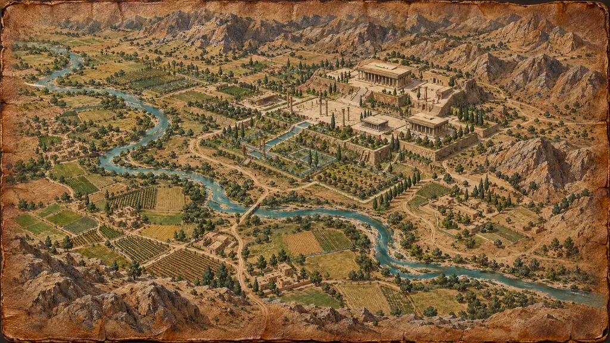
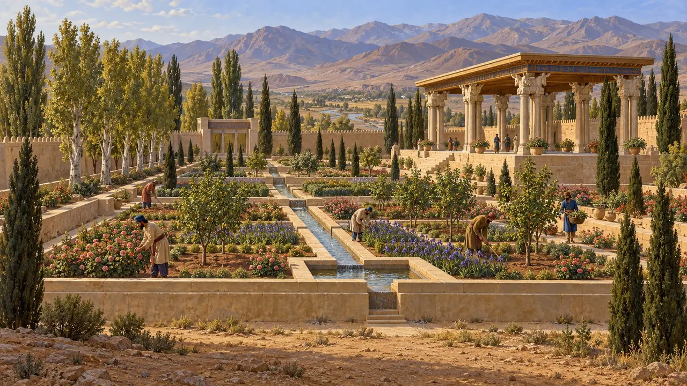
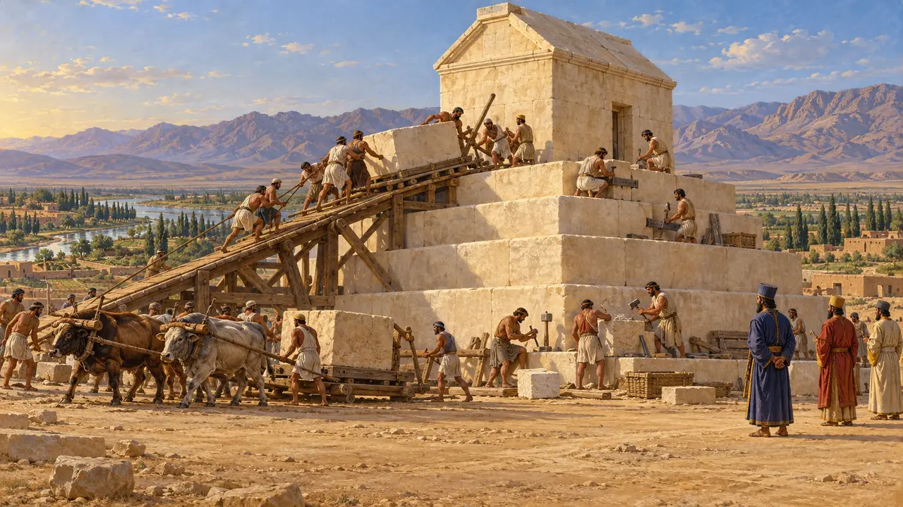
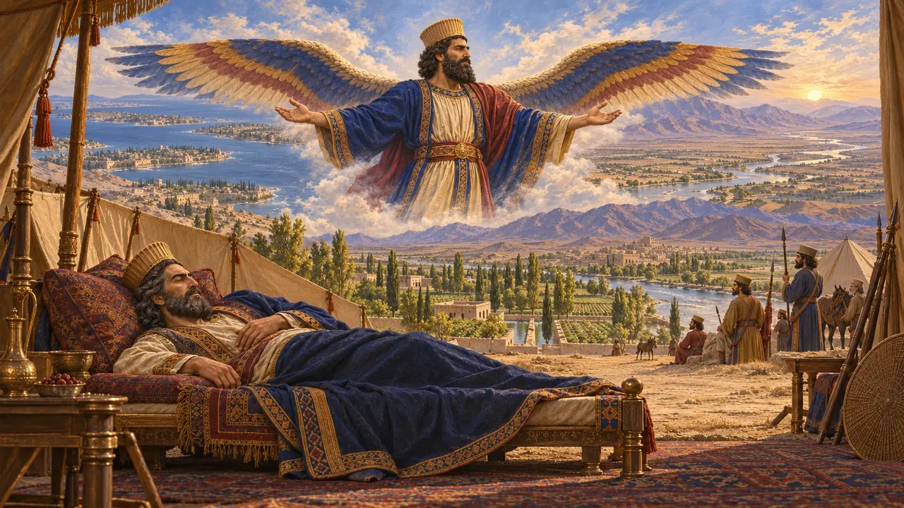
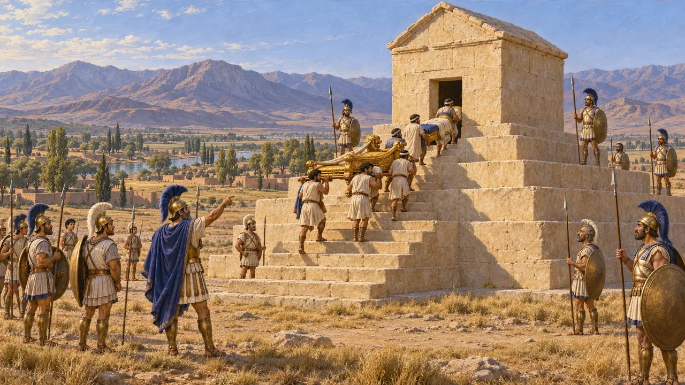

Уровень 1: Гробница основателя · Пасаргады · 530 г. до н. э.
Гробница основателя
Равнина Пасаргад, где, по словам Страбона, Кир разбил мидян.
Энциклопедия › История
Пасаргады были собственным городом Кира, заложенным на высокой равнине Персиды среди садов, которые питали каменные водоводы. Отсюда царь небольшого горного царства создал величайшую державу, какую до тех пор знал мир, и здесь по сей день стоит его гробница.

- 559 BCE Кир — царь Аншана
- 550 г. до н. э. Падение Астиага Мидийского
- 547 BCE Взятие Сард
- 539 BCE Вавилон открывает ворота
- 530 г. до н. э. Смерть Кира
- 324 BCE Александр восстанавливает гробницу
Царь Аншана
Свидетельства эпохиКир называл себя царём Аншана, сыном Камбиса, из рода Теиспа. Около 550 г. до н. э. мидийский царь Астиаг выступил против него, но его собственное войско взбунтовалось и выдало его, и Кир взял Экбатаны с их сокровищами. Страбон пять веков спустя пишет, что Пасаргады были основаны на месте победы Кира (античное предание).
В игре: Горные налётчики нападают с востока, как некогда мидяне.
Nabonidus Chronicle ii 1-4; Cyrus Cylinder 20-21; Strabo 15.3.8

Царь четырёх сторон света
Свидетельства эпохиВ 539 году до н. э. Вавилон открыл ворота. Глиняный цилиндр, заложенный в его стены, гласит, что бог Мардук избрал Кира и что тот вернул богов и народы на родину. Это царская пропаганда в старом вавилонском духе, а не «первая хартия прав человека», как его порой называют, но он показывает завоевателя, желавшего, чтобы его встречали с радостью.
Cyrus Cylinder (British Museum); Nabonidus Chronicle iii 12-20

Город садов
Свидетельства эпохиРаскопки 1961–1963 годов открыли дворцы с колонными залами, надвратную башню с рельефом четырёхкрылого стража и сад, обрамлённый известняковыми водоводами и бассейнами. Слово «парадиз» восходит к древнеперсидскому названию такого огороженного сада.
В игре: Поля, орошаемые каналами из Пульвара, кормят город.
D. Stronach, Pasargadae (1978); Xenophon, Oeconomicus 4.20-25

Камень за камнем
Свидетельства эпохиГробница — каменная камера с двускатной кровлей на шести ступенчатых цоколях, высотой около одиннадцати метров. Её блоки уложены без раствора и скреплены металлическими скобами — этому приёму научились у каменотёсов Лидии и Ионии. Арриан описывает внутри золотое ложе и саркофаг.
В игре: Гробница — главная постройка уровня, она растёт ряд за рядом.
Arrian, Anabasis 6.29; Strabo 15.3.7; Stronach (1978)

«Я, Кир, царь»
СпорныйКороткие надписи на дворцах гласят: «Я — Кир, царь, Ахеменид». Многие учёные полагают, что их высекли позднее по приказу Дария, чтобы связать Кира с его собственным родом. Геродот рассказывает, что Киру приснился юный Дарий с крыльями, осенявшими Азию и Европу. Встреча Кира и Дария в игре — художественный вымысел.
В игре: Поручение Кира Дарию — художественный вымысел, отмеченный как таковой.
Inscriptions CMa-CMc; Herodotus 1.209

Как погиб Кир
СпорныйВавилонские таблички показывают, что его царствование окончилось в 530 году до н. э. Из множества преданий Геродот выбрал то, в котором царица массагетов Томирис убила его в битве. Ктесий пишет, что он умер от раны в войне с дербиками; у Ксенофонта он мирно умирает в своей постели.
Herodotus 1.205-214; Ctesias (Photius 72); Xenophon, Cyropaedia 8.7

Александр у гробницы
Античное свидетельствоДва века спустя, в 324 году, Александр Македонский нашёл гробницу разграбленной. Он велел допросить её стражей и приказал Аристобулу вернуть тело на место и запечатать вход. В последующие века гробница уцелела как «гробница матери Соломона».
Arrian, Anabasis 6.29, from Aristobulus
Read next: the topics of Гробница основателя
Битвы и события
Восстание Кира против мидян · Битва при Пасаргадах · Падение Сард · Завоевание Ионии Гарпагом · Падение Вавилона · Война Кира с массагетами · Погребение Кира · Завоевание Египта Камбисом
Здания
Колодец · Святилище · Обитель магов · Писцовая контора · Караван-двор · Регулярный сад · Гробница Кира · Зал приёмов · Жилой дворец · Царский сад · Scout Post · Стрельбище · Кавалерийская конюшня
Воины и корабли
Жители
Астиаг · Кир Великий · Томирис · Дарий Великий · Александр I Македонский
Народы
Персы · Мидян · Эламиты · Вавилоняне · Лидийцы · Горные народы Персиды
Животный мир и погода
Газель · Онагр · Дикая коза · Белый аист · Заяц · Обыкновенный шакал · Лев · Уриал · Дикие утки · Куропатка · Коршун · Белоголовый сип · Сизый голубь · Галка · Журавль · Ласточка · Летучие мыши · Домовый сыч · Серая ворона